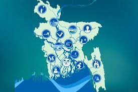
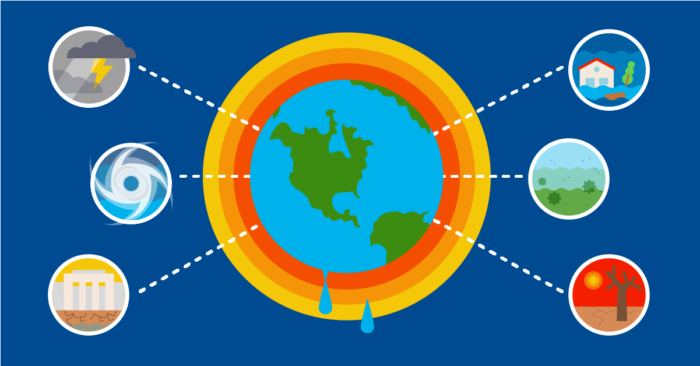
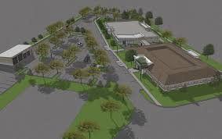
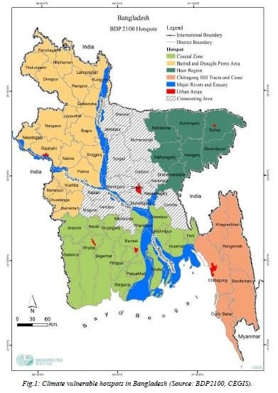
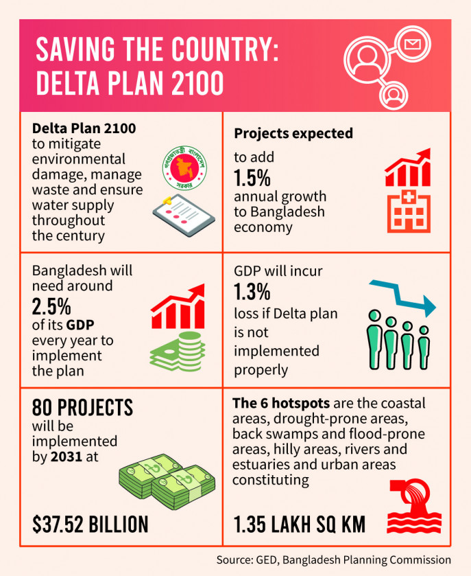
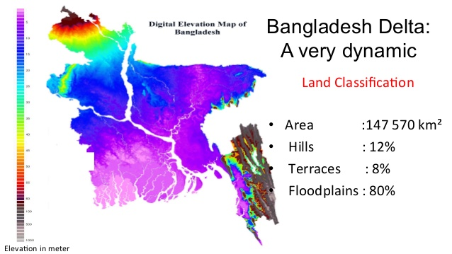

The Bangladesh Delta Plan (BDP) 2100 is a long term integrated techno-economic mega plan that integrates all delta-related sector plans and policies, enveloping a Delta Vision and strategies that make it possible to integrate sector plans and policies for the long term and to present actionable interventions with a roadmap for realization.

“Achieving safe, climate resilient and prosperous delta”
Government of Bangladesh has approved the Delta Plan 2100 on September 4, 2018 to secure the future of water resources and mitigate the likely effects of climate change and natural disasters.
The Bangladesh Delta Plan (BDP) 2100 is a broad-based long-term vision about the likely changes and necessary intervention to make the Bangladesh Delta a safe by the end of the 21st Century. Thus, an integrated, comprehensive and long-term Delta Vision has been stated as:
This long-term vision needs to be translated into specific goals or targets for its implementation. This is done by combining long term development outcomes in terms of economic growth and poverty reduction in the Perspective of 2041 with targets for reducing long term vulnerability from water and climate change related hazards plus targets for environmental conservation.
“The Mission for BDP 2100 is formulated as:”
“ Ensure long term water and food security, economic growth and environmental sustainability while effectively reducing vulnerability to natural disasters and building resilience to climate change and other delta challenges through robust, adaptive andintegrated strategies, and equitable water governance ”.

“BDP 2100 approach to long term goals:”
3 Higher level goals:
The BDP 2100 proposes 3 higher level national goals and 6 BDP 2100 specific goals that contribute to achieving these higher-level goals.
Goal 1: Eliminate extreme poverty by 2030;
Goal 2: Achieve upper middle-income status by 2030 and
Goal 3: Being a Prosperous Country beyond 2041

“BDP 2100 specific goals:”
Goal 1: Ensure safety from floods and climate change related disasters;
Goal 2: Enhance water security and efficiency of water usages;
Goal 3: Ensure sustainable and integrated river systems and estuaries management;
Goal 4: Conserve and preserve wetlands and ecosystems and promote their wise use;
Goal 5: Develop effective institutions an- d equitable governance for in-country and trans-boundary water resources management; and
Goal 6: Achieve optimal and integrated use of land and water resources.

<
“Saving The country Delta plan,2100”
Sustainable Land Use and Spatial Planning
Agriculture, Food Security and Livelihood
Trans-boundary Water Resources Management
Dynamic Inland Water Transport
Blue Economy
Renewable Energy
Earthquakes

“BDP 2100,Strategies:”
Strategies developed at 3 Levels.
National Level:
Flood Risk Management
Fresh Wate
Hotspot Level:
Coastal Zone (27, 738 sq. km)
Barind and Drought Prone Areas (22,848 sq. km)
Haor and Flash Flood Areas (16,574 sq. km)
Chattogram Hill Tracts (13,295 sq. km)
River Systems and Estuaries (35,204 sq. km)
Urban Areas (19,823 sq. km)

Sign up form
About us
BDP 2100 is grounded in a long-term vision of the Delta’s future. This long-term vision, combined with the use of scenarios, allows planning to be adaptive and dynamic by constantly taking into account uncertainties in future developments in e.g. climate change, socio-economic development, population growth and regional cooperation.